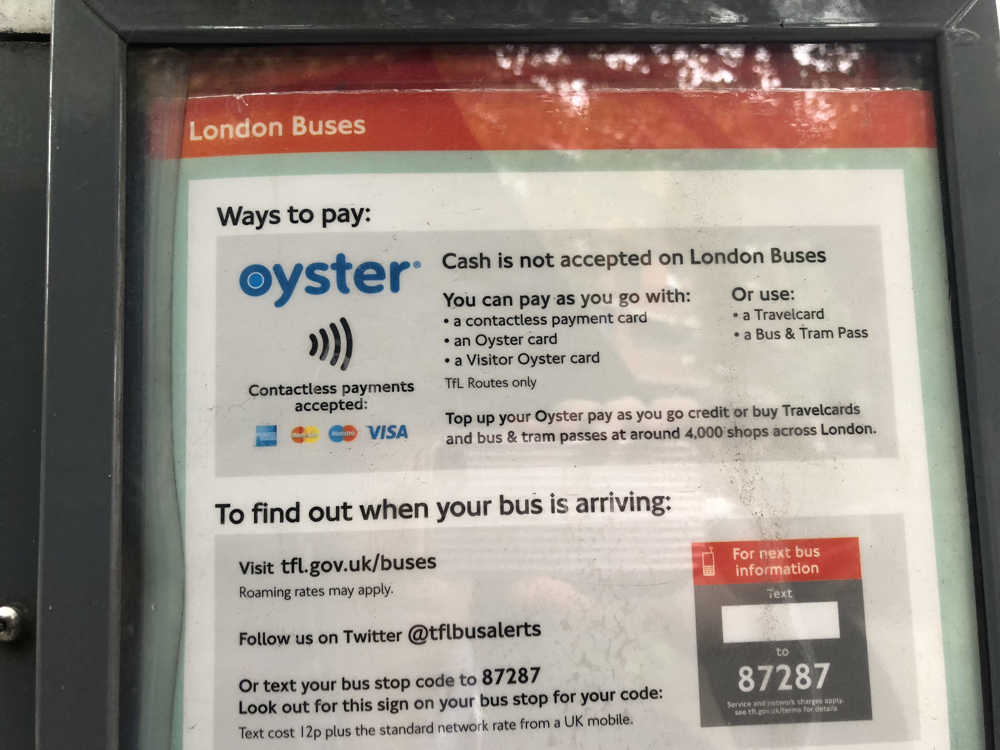
キャッシュレス世界旅行レポート第6弾では、欧州最終編としてイギリスとドイツでのキャッシュレス事情を紹介する。
日本で既にトレンドとなっている「キャッシュレス」。だが、日本のキャッシュレス比率は先進国の中では非常に低いことをよく耳にする。日本のキャッシュレス化に向けたさまざまな取り組みが官民問わず行われている一方で、世界各国ではどのようにキャッシュレスが推進されているのか。そんな疑問を、インフキュリオン・グループに来年度入社する東京大学4年工学部物理工学科の森本颯太（はやた）が、内定者インターンとして「現金決済禁止という制約のもと完全キャッシュレスで世界11カ国を1カ月間単独」で調査。各国のキャッシュレス事情について現地の雰囲気とともに、その様子を7回に渡ってレポートしていく。現金が使えないからこそできる体験。現金がないと何もできない国もあれば、どんなところでもカードやアプリで決済できる国などさまざまで波乱万丈な旅となった。
レポート第4弾のスウェーデン、第5弾のエストニアのように欧州はキャッシュレス社会を牽引している。イギリスでは非接触決済端末が普及しており、また完全キャッシュレスなバスやシェア自転車などさまざまなキャッシュレスサービスを体験することができた。しかしドイツは、経済産業省のデータによると*1日本よりもキャッシュレス決済比率が低く、キャッシュレス社会から遠い国の一つである。現地の方へのインタビューを通じて、その理由を調査してみた。
イギリス
1.非接触決済の普及
金融大国であるイギリスのキャッシュレス化は著しい。The Guardian*2によると、2006年は現金使用率が62％であったのに対し、2016年には40％ほどにまで下がっている。データが示す通り、イギリス国内で筆者が訪れたレストランやショップ全店でカード決済が可能であった。また各決済端末は、第2弾のオーストラリアの記事に書いた非接触対応（PINコード不要で、カードをかざすだけで決済可能な端末）のものばかりであった。イギリスで発行されているデビット・クレジットカードの多くがこの非接触対応であるため、非接触決済をしている方を多く見かけた。
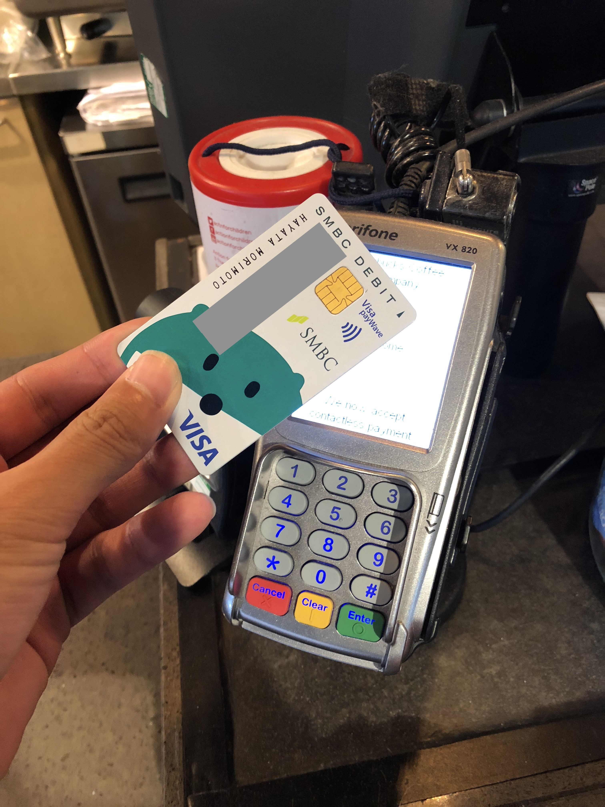
写真1.非接触でらくらく決済可能
唯一カード決済ができなかった場面は、街中にあったキオスクでの買い物である。店主曰く5ポンド以下ではカードが使用できず、このように少額決済のカード使用は不可とされる場所は他にも数カ所あるらしかった。
1.1バスやシェア自転車は現金お断り
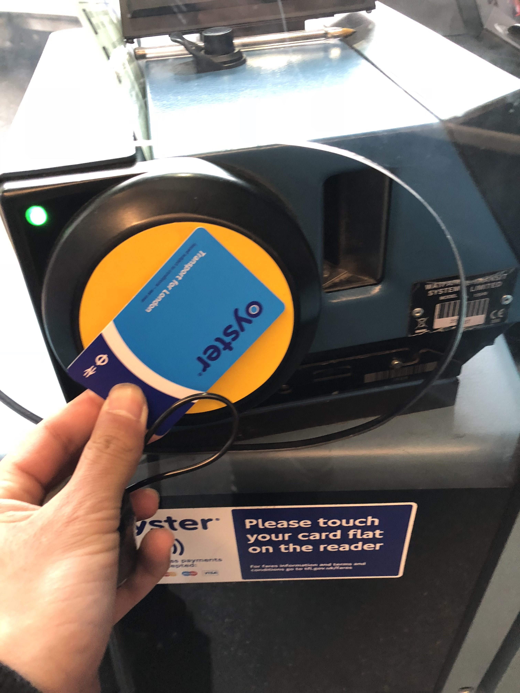
写真2.Oysterカード以外にもApple Payなどでも乗車可能
イギリスの市内では、少し歩けば必ず目にすると言っていいほど、多くの赤いバスが走っていた。実はこの有名なバスは2014年から完全キャッシュレスとなっており、乗車料金は現金で支払うことができない。支払い方法は「Oysterカード」という交通系ICカードであり、このカードは各駅の券売機にてカード決済で購入することができる。
写真3.ロンドンバスでは現金お断り
また驚いたことに、Oysterカードが無くても先述した非接触対応のデビット・クレジットカードで乗車可能であった。Oysterカードをかざす端末にデビット・クレジットカードをかざすと、乗車料金がその場で決済される。そのため、Oysterカードの残高がない場合にわざわざチャージせずとも簡単に乗車することができ、非常に便利であった。
イギリス市内の移動はバスだけでなく、シェア自転車も利用することができた。特に赤い色が特徴的な「Santander Cycles」というシェア自転車をよく目にした。
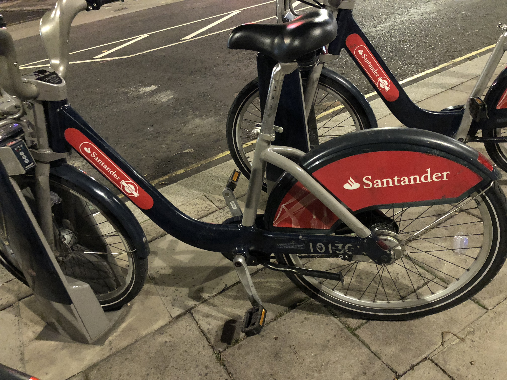
写真4.この「Santander Cycles」以外には中国で利用した「Mobike」なども見かけた
このシェア自転車を利用するには、駐輪場近くにある専用の機械を操作するか、専用のアプリをダウンロードする必要がある。どちらも決済方法はデビット・クレジットカードであり、キャッシュレスとなっていた。アプリを使えば、位置情報をもとに近くの駐輪場の空き状況を確認することができたため、空いている自転車をわざわざ探す手間が省けて便利であった。
2.座席支払いでらくらく決済
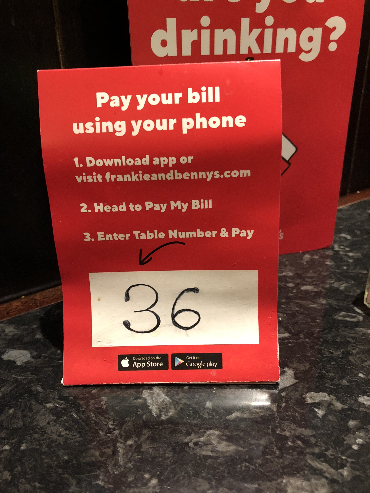
写真5.レストランの座席には座席支払い用の番号が置いてある
イギリスのレストランでは座席支払いが普及していた。例えば、実際に訪れたレストラン「Frankie & Benny’s」では各座席に番号が設置されていた。Webもしくは携帯アプリでこの座席番号と店名を入力すると、画面上に実際に注文した商品とその料金が表示され、その後Apple Payやその他カード払いを選択するだけで会計を済ませることができた。会計が終わったあとに店員に一声かけるだけで良いので混雑時には非常に楽であった。
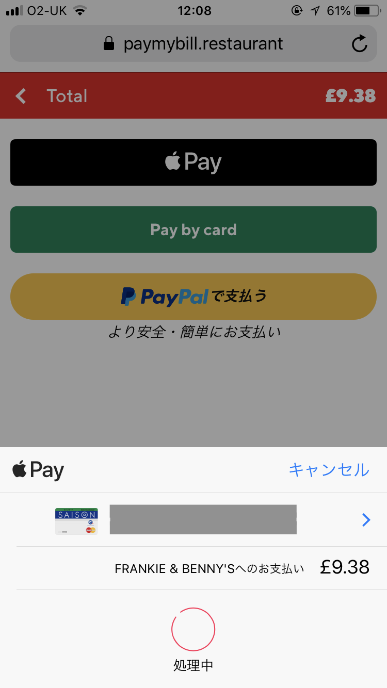
写真6.座席支払いではApple PayやPayPalなどが利用可能
2.1 マクドナルドもキャッシュレス
また、同国のマクドナルドにはタッチパネル式のセルフオーダー端末が複数設置されていた。この端末では現金は使えず、カード支払いのみであった。現金が利用できる通常のレジも存在したが、多くの客はこのタッチパネル式のセルフオーダー端末を利用していた。このように、イギリスの日常生活ではカードがあると便利な場面が多く、カード普及率の高さが伺えた。
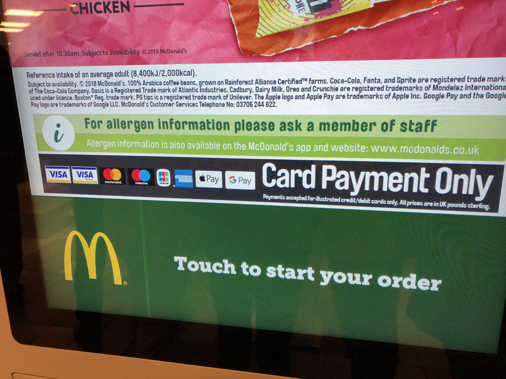
写真7.最新セルフオーダー端末
3.チャレンジャーバンクの勢い
ミレニアル世代を中心に、銀行というサービスがより身近なものとなってきている。カードの発行、与信調査、振込や送金といった既存の銀行サービスを、全てモバイルアプリで提供するチャレンジャーバンクの存在がイギリスでは大きくなりつつあった。今回は、筆者が道中で実際に使用している方を見たということもあり、「Monzo」というチャレンジャーバンクを紹介する。
3.1 未来の銀行「Monzo」
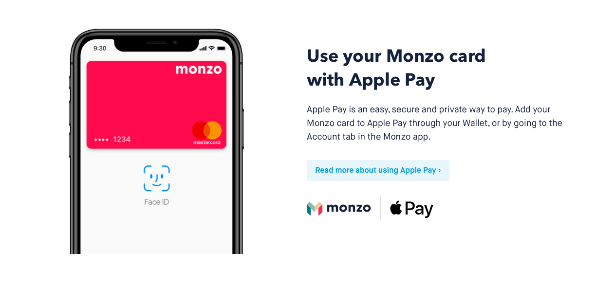
写真8.「Monzo」の公式サイト
2015年にロンドンで創業した「Monzo」は、同社の2018年のレポートによると、既にユーザー数が75万人を超えている。創業初期はプリペイド型デビットカードを発行していたが、現在は「Monzo」で当座預金口座を開設可能となり、その口座にひも付いた非接触型カード（Monzoカード）が郵送されるそうだ*3。
実店舗がなく全てアプリで完結するため、カード紛失時にアプリで即座に口座凍結が可能となる。また、購入した商品の詳細（購入店舗、商品名など）がアプリ上で閲覧可能であり、支出の管理に便利である。
旅の中でこのMonzoカードを実際に使用している場面に遭遇し、その利用者（女性・27歳）に話を聞くことができた。IT企業で働いているというこの女性は、Apple PayにMonzoカードを登録しており、先述したキャッシュレスのバスへ乗車する際に携帯を端末にかざして決済をしていた。
話を聞くと、彼女はほとんどの決済でこのMonzoカードを利用しているが、彼女の周りで同様にMonzoカードを利用している人は数人程度しかいないらしい。市内で20人程度に「Monzo」を含めたモバイルバンキングアプリの認知度を調べてみたが、知っていると答えた人は約50％で、実際に利用している人は3人であった。やはり利用者のほとんどがミレニアル世代らしく、高齢者にとっては利用方法が難しいとの声も上がっていた。
4.イギリスまとめ
たった1日の滞在であったが、多くのキャッシュレスサービスがロンドン市内に広まっているのを見ることができた。現金決済が必要になったのは先述したキオスクでの少額決済のみで、それ以外はカード支払いで生活することができた。また、バスやシェア自転車などカードがないと利用できない場面も多々あり、スウェーデン同様カードがないと不便であることがわかった。
ドイツ
1.ドイツのキャッシュレス
欧州でもトップクラスの経済大国であるドイツだが、経済産業省のデータによれば*1、各国のキャッシュレス決済比率の状況（2015年）は上記のイギリスが54.9％、日本が18.4％に対してドイツは14.9％となっており、日本より現金思考が強く、キャッシュレス社会から遠い国の一つである。
2.実際に聞いてみたキャッシュレス事情
日本よりキャッシュレス比率が低い国。しかし実際に現地で生活してみると、そのようなことは感じなかった。例えば、コンビニやスーパーはもちろん電車の切符もカード決済が可能であった。タクシーも同国で普及していた配車アプリ「mytaxi」を使用すれば、登録しているクレジットカードで決済が可能となる。
今回滞在した場所は、大都市フランクフルトとレーダという人口約4万人の小さい街の2カ所であったが、大手スーパーや飲食店ではどこでもカード決済を行うことができた。第2弾で紹介したインドのように、カード決済のインフラが整っていないわけではないようだった。
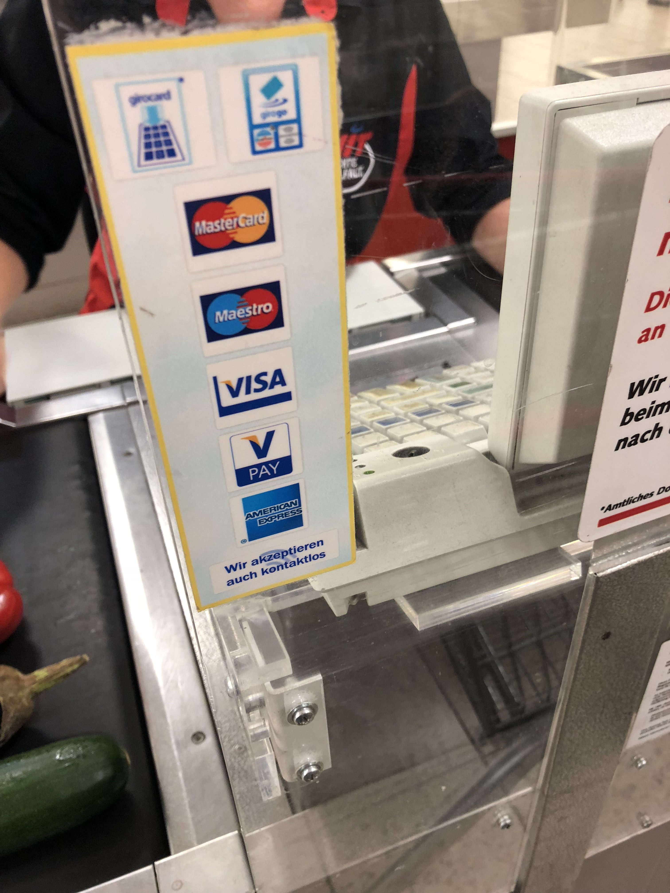
写真9.都市部から離れた小さな街のスーパーでもカード払いは可能
ではなぜキャッシュレス決済比率が低いのか。その理由を探るため数名の地元の方にインタビューをしたところ、「年配者はカードやインターネットに対しての信用が低い」という意見が一番多かった。戦争の影響もあり、「自分の情報は自分で守る」という意識が高いらしい。
しかし、ミレニアル世代は年配層に比べるとインターネットなどに対する信用が比較的高いため、日常生活でカードを利用しているそうだ。また、最近ではドイツ発のモバイルバンキング「N26」の利用がミレニアル世代で上昇しており、今後ドイツでのキャッシュレス事情は大きく変化するかもしれないと感じた。
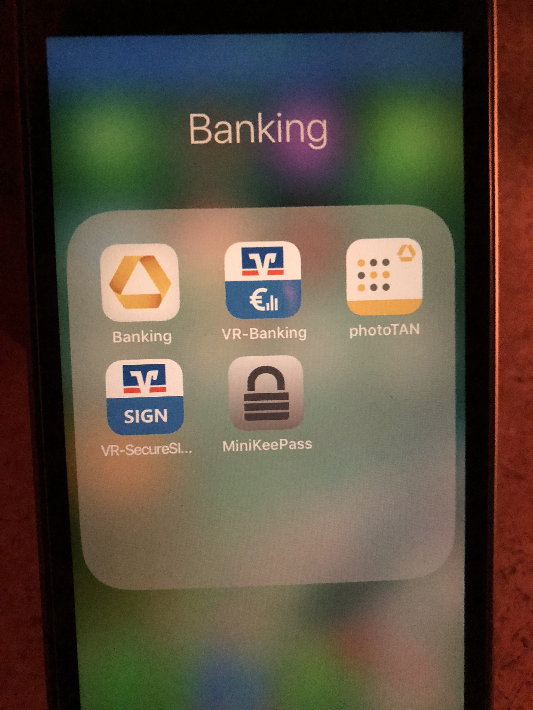
写真10.若者の携帯にはバンキングアプリなどがインストールされていた
3.キャッシュカードに付いている二つの機能
ドイツで普及しているカードはクレジットカードでなくキャッシュカードであった。銀行口座のキャッシュカードには二つ機能があり、一つはキャッシュカードがデビットカードのように使える「Girocard」と呼ばれるものであり、もう一つはプリペイドカードとして使える「Geldkarte」と呼ばれるものである。一つ目の「Girocard」での決済時にはPINコードの入力が欠かせず、デビットカード同様に決済料金が即座に銀行口座から引き落とされる。
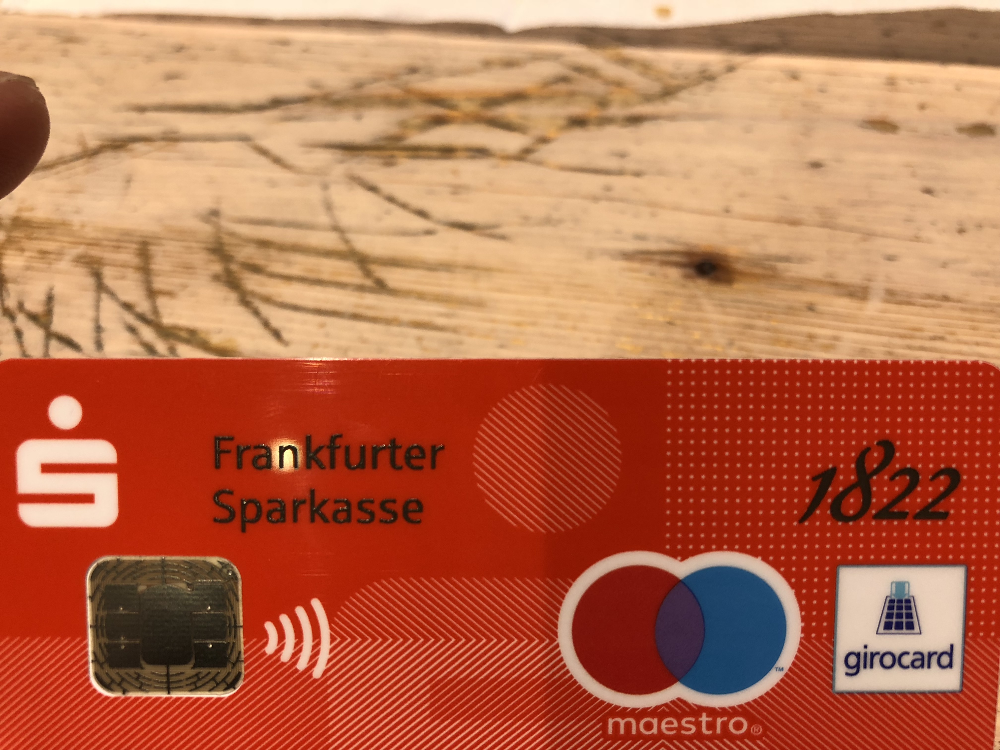
写真11.現地の方が持っていたキャッシュカード 非接触対応とGirocardのマークが付いている
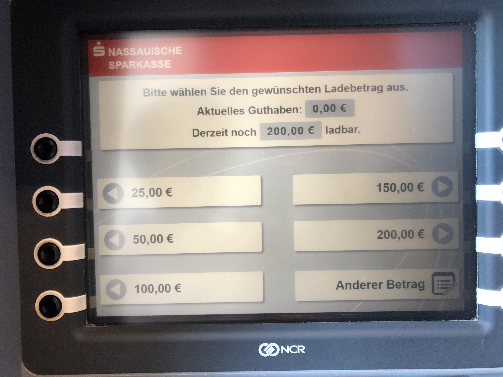
写真12.銀行のATMで「Geldkarte」用にキャッシュカードに現金をチャージすることができる
もう一つの機能「Geldkarte」は、銀行口座から直接キャッシュカードに事前チャージをすることで、キャッシュカードをプリペイドカードのように使える機能である。チャージできる上限は決まっているが、ATMでカードに事前チャージをしておけば、PINコードの入力なしで非接触決済が可能となる。ただ、非接触決済が利用できる場所はコンビニや自動販売機などの少額決済のみだそうだ。
4.ドイツまとめ
想像していたよりもカード決済が可能であったドイツ。小さな露店では現金決済のみの場所が多いが、スーパーなどではカード決済が可能であった。感覚としては日本と同じくらいの決済インフラは整っていた。しかし、それでもキャッシュレス比率が低い理由は、国民の（特に年配者の）個人情報に対する価値観によるものと感じた。
キャッシュレス世界旅行レポートも、次でついに最終回となります。調査した国はこの旅を締めくくるにふさわしいアメリカのシアトルです。Amazon GoやAmazon Books、スターバックスアプリやシェア自転車などキャッシュレスサービスが盛り沢山で、この旅の中で一番ワクワクした国となりました。ぜひ楽しみにお待ちください！
参照記事
*1: キャッシュレスビジョン
http://www.meti.go.jp/press/2018/04/20180411001/20180411001-1.pdf
*2:Revealed: Cash eclipsed as Britain turns to digital payments
*3 : Monzo officially ends its prepaid programme making way for its current accounts
https://www.standard.co.uk/tech/monzo-prepaid-card-current-accounts-challenger-bank-a3805761.html</blockquot